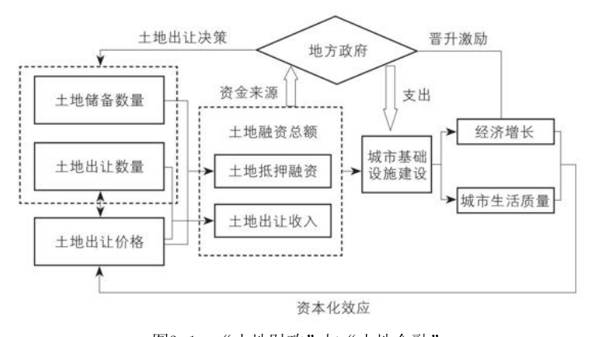

第三章 政府投融资与债务
城投公司、融资平台与土地金融：地方政府如何以土地撬动债务，扮演“城市投资人”。
本章引言
暨南大学附近有个地方叫石牌村，是广州最大的城中村之一，很繁华。前两年有个美食节目探访村中一家卖鸭仔饭的小店，东西好吃还便宜，一份只卖12元。中年老板看上去非常朴实，主持人问他：“挣得很少吧？”他说：“挣得少，但是我生活得很开心。因为我自己……我告诉你，我也是有……不是很多钱啦，有10栋房子可以收租。”主持人一脸“怪不得”的样子对着镜头哈哈大笑起来：“为什么可以卖12元？因为他有10套房子可以收租！”老板平静地纠正他：“是10栋房哦，不是10套房哦，10栋房，一栋有7层。”主持人的大笑被这突如其来的70层楼拍扁在了脸上……很多人都有过幻想：要是老家的房子和地能搬到北、上、广、深就好了。都是地，人家的怎么就那么值钱？区区三尺土地，为什么一旦变成房本，别人就得拿大半辈子的收入来换？再穷的国家也有大片土地，土地本身并不值钱，值钱的是土地之上的经济活动。若土地只能用来种小麦，价值便有限，可若能吸引来工商企业和人才，价值想象的空间就会被打开，笨重的土地就会展现出无与伦比的优势：它不会移动也不会消失，天然适合做抵押，做各种资本交易的压舱标的，身价自然飙升。土地资本化的魔力，在于可以挣脱物理属性，在抽象的意义上交易承诺和希望，将过去的储蓄、现在的收入、未来的前途，统统汇聚和封存在一小片土地上，使其价值暴增。由此产生的能量不亚于科技进步，支撑起了工业化和城市化的巨大投资。经济发展的奥秘之一，正是把有形资产转变成为这种抽象资本，从而聚合跨越空间和时间的资源。(1)上一章介绍了城市政府如何平衡工业用地和商住用地供应，一手搞“工业化”，一手搞“城市化”，用土地使用权转让费撑起了“第
二财政”。但这种一笔一笔的转让交易并不能完全体现土地的金融属性。地方政府还可以把与土地相关的未来收入资本化，去获取贷款和各类资金，将“土地财政”的规模成倍放大为“土地金融”。本章第一节用实例来解释这种“土地金融”与政府投资模式。第二节介绍这种模式的弊端之一，即地方政府不断加重的债务负担。与政府债务相关的各项改革中也涉及对官员评价和激励机制的改革，因此第三节将展开分析地方官员在政府投融资过程中的角色和行为。
第一节 城投公司与土地金融
实业投资要比金融投资复杂得多，除了考虑时间、利率、风险等基本要素之外，还要处理现实中的种种复杂情况。基金经理从股票市场上买入千百个散户手中的股票，和地产开发商从一片土地上拆迁掉千百户人家的房子，虽然同样都是购买资产，都算投资，但操作难度完全不同。后者若没有政府介入，根本干不成。实业投资通常是个连续的过程，需要不断投入，每个阶段打交道的对象不同，所需的专业和资源不同，要处理的事务和关系也不同。任一阶段出了纰漏，都会影响整个项目。就拿盖一家商场来说，前期的土地拆迁、中期的开发建设、后期的招商运营，涉及不同的专业和事务，往往由不同的主体来投资和运作，既要考虑项目整体的连续性，也要处理每一阶段的特殊性。我国政府不但拥有城市土地，也掌控着金融系统，自然会以各种方式参与实业投资，不可能置身事外。但实业投资不是买卖股票，不能随时退出，且投资过程往往不可逆：未能完成或未能正常运转的项目，前期的投入可能血本无归。所以政府一旦下场就很难抽身，常常不得不深度干预。在很长一段时期内，中国GDP增长的主要动力来自投资，这种增长方式必然伴随着政府深度参与经济活动。这种方式是否有效率，取决于经济发展阶段，本书下篇将深入探讨。但我们首先要了解政府究竟是怎么做投资的。本节聚焦土地开发和基础设施投资，下一章再介绍工业投资。地方政府融资平台：从成都“宽窄巷子”说起法律规定，地方政府不能从银行贷款，2015年之前也不允许发行债券，所以政府要想借钱投资，需要成立专门的公司。(2)这类公司大都是国有独资企业，一般统称为“地方政府融资平台”。这个名称突
出了其融资和负债功能，所以经济学家和财经媒体在谈及这些公司时，总是和地方债务联系在一起。但这些公司的正式名称可不是“融资平台”，而大都有“建设投资”或“投资开发”等字样，突出自身的投资功能，因此也常被统称为“城投公司”。比如芜湖建设投资有限公司（奇瑞汽车大股东）和上海城市建设投资开发总公司（即上海城投集团），都是当地国资委的全资公司。还有一些公司专门开发旅游景点，名称中一般有“旅游发展”字样，比如成都文化旅游发展集团，也是成都市政府的全资公司，开发过著名景点“宽窄巷子”。“宽窄巷子”这个项目，投融资结构比较简单，从立项开发到运营管理，由政府和国企一手包办。“宽窄巷子”处于历史文化保护区域，开发过程涉及保护、拆迁、修缮、重建等复杂问题，且投资金额很大，周期很长，盈利前景也不明朗，民营企业难以处理。因此这个项目从2003年启动至今，一直由两家市属全资国企一手操办：2007年之前由成都城投集团负责，之后则由成都文旅集团接手。2008年景区开放，一边运营一边继续开发，直到2019年6月，首期开发才正式完成，整整花了16年。从文旅集团接手开始算，总共投入约6.5亿元，其中既有银行贷款和自有收入，也有政府补贴。成都文旅集团具有政府融资平台类公司的典型特征。第一，它持有从政府取得的大量土地使用权。这些资产价值不菲，再加上公司的运营收入和政府补贴，就可以撬动银行贷款和其他资金，实现快速扩张。2007年，公司刚成立时注册资本仅5亿元，主业就是开发“宽窄巷子”。2018年，注册资本已达31亿元，资产204亿元，下属23家子公司，项目很多。(3)第二，盈利状况依赖政府补贴。2015—2016年，成都文旅集团的净利润为6 600多万元，但从政府接收到的各类补贴总额超过2亿元。补贴种类五花八门，除税收返还之外，还有纳入公共预算的专项补贴。比如成都市公共预算内有一个旅游产业扶持基金，2012—2015年
间，每年补贴文旅集团1亿元以上。政府还可以把土地使用权有偿转让给文旅集团，再以某种名义将转让费原数返还，作为补贴。(4)2015年新《预算法》要求清理各种补贴。2017—2018年，文旅集团的净利润近1.4亿元，补贴则下降到不足4 000万元。盈利状况依赖政府补贴，是否就是没效率？不能一概而论。融资平台公司投资的大多数项目都有基础设施属性，项目本身盈利能力不强，否则也就无需政府来做了。这类投资的回报不能只看项目本身，要算上它带动的经济效益和社会效益。但说归说，这些“大账”怎么算，争议很大。经济学的福利分析，作为一种推理逻辑有些用处，但从中估算出的具体数字并不可靠。2009年初，我第一次去“宽窄巷子”，当时还是个新景点，人并不多。2016年夏天，我第二次去，这里已经成了著名景点，人山人海。根据文旅集团近几年披露的财务数据，“宽窄巷子”每年接待游客2 000万人次，集团营收八九千万元，净利两三千万元，且增速很快，经济效益很好。但就算没有净利甚至亏损，这项目就不成功么？也难说。2 000万游客就算人均消费50元，每年10亿元的体量也是个相当不错的小经济群。而且还带动着周边商业、餐饮、交通的繁荣，社会效益也不错。对政府和老百姓来说，这也许比项目本身的盈利能力更加重要。第三，政府的隐性担保可以让企业大量借款。银行对成都文旅集团的授信额度为176亿元，而文旅集团发行的债券，评级也是AA+。该公司是否应有这么高的信用，见仁见智。但市场一般认为，融资平台公司背后有政府的隐性担保。所谓“隐性”，是因为《担保法》规定政府不能为融资平台提供担保。但其实政府不断为融资平台注入各类资产，市场自然认为这些公司不会破产，政府不会“见死不救”，所以风险很低。“宽窄巷子”这个项目比较特殊，大多数类似的城市休闲娱乐项目并不涉及大量历史建筑的修缮和保护，开发过程也没这么复杂，可
以由民营企业完成。比如遍及全国的万达广场和著名的上海新天地（还有武汉天地、重庆天地等），都是政府一次性出让土地使用权，由民营企业（万达集团和瑞安集团）开发和运营。当地的融资平台公司一般只参与前期的拆迁和土地整理。用术语来说，一块划出来的“生地”，平整清理后才能成为向市场供应的“熟地”，这个过程称为“土地一级开发”。“一级开发”投入大、利润低，且涉及拆迁等复杂问题，一般由政府融资平台公司完成。之后的建设和运营称为“二级开发”，大都由房地产公司来做。工业园区开发：苏州工业园区vs华夏幸福从运营模式上看，成都文旅集团有政府融资平台企业的显著特点，但大多数融资平台的主业不是旅游开发，而是工业园区开发和城市基础设施建设。工业园区或开发区在我国遍地开花。2018年，国家级开发区共552家，省级1 991家，省级以下不计其数。(5)苏州工业园区是规模最大也是最成功的国家级开发区之一，占地278平方公里。2019年，园区GDP为2 743亿元，公共财政预算收入370亿元，经济体量比很多地级市还大。(6)如此大规模园区的开发和运营，自然要比“宽窄巷子”复杂得多，参与公司众多，主力是两家国企：兆润集团负责土地整理和基础设施建设（土地一级开发），2019年底刚上市的中新集团负责建设、招商、运营（土地二级开发）。兆润集团（全称“苏州工业园区兆润投资控股集团有限公司”）就是一家典型的融资平台公司。这家国有企业由园区管委会持有100%股权，2019年注册资本169亿元，主营业务是典型的“土地金融”：管委会把土地以资本形式直接注入兆润，由它做拆迁及“九通一平”等基础开发，将“生地”变成可供使用的“熟地”，再由管委会回购，在土地市场上以招拍挂等形式出让，卖给中新集团这样的企业去招商和运营。兆润集团可以用政府注入的土地去抵押贷款，或用未来土地
出让受益权去质押贷款，还可以发债，而还款来源就是管委会回购土地时支付的转让费及各种财政补贴。兆润集团手中土地很多，在高峰期的2014年末，其长期抵押借款超过200亿元，质押借款超过100亿元。(7)与成都宽窄巷子或上海新天地这样的商业项目相比，开发工业园区更像基础设施项目，投资金额大（因为面积大）、盈利低，大都由融资平台类国企主导开发，之后交给政府去招商引资。而招商引资能否成功，取决于地区经济发展水平和营商环境。像上海和苏州工业园区这种地方，优秀企业云集，所以招商的重点是“优中选优”，力争更好地聚合本地产业资源和比较优势。我去过苏州工业园区三次，每次都感叹其整洁和绿化环境，不像一个制造业企业云集的地方。2019年，园区进出口总额高达871亿美元。虽说其飞速发展借了长三角的东风，但运营水平如此之高，园区管委会和几家主要国企功不可没。而在很多中西部市县，招商就困难多了。地理位置不好，经济发展水平不高，政府财力和人力都有限，除了一些土地，没什么家底。因此有些地方干脆就划一片地出来，完全依托民营企业来开发产业园区，甚至连招商引资也一并委托给这些企业。这类民企的代表是华夏幸福，这家上市公司的核心经营模式是所谓的“产城结合”，即同时开发产业园区和房地产。简单来说，政府划一大片土地给华夏幸福，既有工业用地，也有商住用地，面积很大，常以“平方公里”为度量单位。华夏幸福不仅负责拆迁和平整，也负责二级开发。在让该公司声名大噪的河北固安高新区项目中，固安县政府签给华夏幸福的土地总面积超过170平方公里。2017年第11期《财新周刊》对华夏幸福做了深度报道，称其为“造城者”，不算夸张。工业园区开发很难盈利。招商引资本就困难，而想培育一个园区，需要引入一大批企业，过程更是旷日持久，所以华夏幸福赚钱主
要靠开发房地产。所谓“产城结合”，“产”是旗帜，“城”是重点，需要用卖房赚到的快钱去支持产业园区运营。按照流程，政府委托华夏幸福做住宅用地的一级开发，之后这片“熟地”要还给政府，再以招拍挂等公开方式出让给中标的房地产企业。假如在这一环节中华夏幸福没能把地拿回来，也就赚不到房地产二级开发的大钱。但据《财新周刊》报道，在实际操作中，主导一级开发的华夏幸福是近水楼台，其他企业很难参与其产业园区中的房地产项目。用房地产的盈利去反哺产业园区，这听起来很像第二章所描述的政府“土地财政”：一手低价供应工业用地，招商引资，换取税收和就业；一手高价供应商住用地，取得卖地收入。但政府“亏本”招商引资，图的是税收和就业，可作为民企的华夏幸福，又能从工业园区发展中得到什么呢？答案是它也可以和政府分享税收收益。园区内企业缴纳的税收（地方留存部分），减去园区运营支出，华夏幸福和政府可按约定比例分成。按照法律，政府不能和企业直接分享税收，但可以购买企业服务，以产业发展服务费的名义来支付约定的分成。政府付费使用私营企业开发建设的基础设施（如产业园区），不算什么新鲜事。这种模式叫“政府和社会资本合作”（Public-Private Partnership, PPP），源于海外，不是中国的发明。如果非要说中国特色，可能有二。第一是项目多，规模大。截至2020年5月，全国入库的PPP项目共9 575个，总额近15万亿元，但真正开工建设的项目只有四成。第二个特色是“社会资本”大都不是民营企业，而是融资平台公司或其他国企，比如本节中提到的成都文旅集团、兆润集团、中新集团等。截至2019年末，在所有落地的PPP项目中，民营企业参与率不过三成，大都只做些独立项目，比如垃圾或污水处理。(8)像华夏幸福这样负责园区整体开发的民企并不多，它打造的河北固安高新区项目也是国家级PPP示范项目。最近两年，对房地产行业以及土地市场的限制越来越严，一些大型传统房企也开始探索这种“产城融合”模式，效果如何尚待观察。
第二章提到，政府搞城市开发和招商引资，就像运营一个商场，需要用不同的代价引入不同的商铺，实现总体收入最大化。政府还可以把这一整套运作都“外包”给如华夏幸福之类的民营企业，让后者深度参与到招商引资的职能中来。诺贝尔经济学奖获得者罗纳德·科斯（Ronald Coase）早在20世纪30年代就问过：“企业和市场的边界在哪里？”“市场如果有效，为什么会有企业？”这些问题不容易回答。如果追问下去，企业和政府的边界又在哪里？从纸面定义看，各种实体似乎泾渭分明，但从实际业务和行为模式来看，融资平台类公司就是企业和政府的混合体，而民营企业如华夏幸福，又承担着政府的招商职能。现实世界中没有定义，只有现象，只有环环相扣的权责关系。或者按张五常的说法，只有一系列合约安排。(9)要想理解这些现象，需要深入调研当事人面临的各种约束，包括能力、资源、政策、信息等，简单的政府—市场二元观，没什么用。
第二节 地方政府债务
图3-1总结了“土地财政”和“土地金融”的逻辑。1994年分税制改革后，中央拿走了大部分税收。但因为有税收返还和转移支付，地方政府维持运转问题不大。但地方还要发展经济，要招商引资，要投资，都需要钱。随着城市化和商品房改革，土地价值飙升，政府不仅靠土地使用权转让收入支撑起了“土地财政”，还将未来的土地收益资本化，从银行和其他渠道借入了天量资金，利用“土地金融”的巨力，推动了快速的工业化和城市化。但同时也积累了大量债务。这套模式的关键是土地价格。只要不断地投资和建设能带来持续的经济增长，城市就会扩张，地价就会上涨，就可以偿还连本带利越滚越多的债务。可经济增速一旦放缓，地价下跌，土地出让收入减少，累积的债务就会成为沉重的负担，可能压垮融资平台甚至地方政府。

图3-1 “土地财政”与“土地金融”地方债的爆发始于2008—2009年。为应对从美国蔓延至全球的金融危机，我国当时迅速出台“4万亿”计划：中央政府投资1.18万亿元（包括汶川地震重建的财政拨款），地方政府投资2.82万亿元。为配资料来源：清华大学郑思齐等人的合作研究（2014）。合政策落地、帮助地方政府融资，中央也放宽了对地方融资平台和银行信贷的限制。2008年，全国共有融资平台公司3 000余家，2009年激增至8 000余家，其中六成左右是县一级政府融资平台。快速猛烈的经济刺激，对提振急速恶化的经济很有必要，但大水漫灌的结果必然是泥沙俱下。财政状况不佳的地方也能大量借钱，盈利前景堪忧的项目也能大量融资。短短三五年，地方政府就积累了天量债务。直到十年后的今天，这些债务依然没有完全化解，还存在不小的风险。为政府开发融资：国家开发银行与城投债实业投资是个复杂而漫长的过程，不是只看着财务指标下注后各安天命，而需要在各个阶段和各个环节处理各种挑战，所以精心选择投资合作伙伴至关重要。我国大型项目的投资建设，无论是基础设施还是工业项目，大都有政府直接参与，主体五花八门：有投融资平台类国企，有相关行业国企，也有科研和设计院所等单位。在现有的金融体制下，有国企参与或有政府背书的项目，融资比较容易。本节聚焦城投公司的基础设施项目融资，第四章和第六章会讨论工业项目中的政府投融资，以及由政府信用催生的过度投资和债务风险。20世纪八九十年代，大部分城市建设经费要靠财政拨款。1994年分税制改革后，地方财力吃紧，城市化又在加速，城建经费非常紧张，如果继续依靠财政从牙缝里一点点抠，大规模城建恐怕遥遥无期。但要想在城市建设开发中引入银行资金，需要解决三个技术问题。第一，需要一个能借款的公司，因为政府不能直接从银行贷款；第二，城建开发项目繁复，包括自来水、道路、公园、防洪，等等，有的赚钱，有的赔钱，但缺了哪个都不行，所以不能以单个项目分头借款，最好捆绑在一起，以赚钱的项目带动不赚钱的项目；第三，仅靠财政预算收入不够还债，要能把跟土地有关的收益用起来。
为解决这三个问题，城投公司就诞生了。发明这套模式的是国家开发银行。1998年，国家开发银行（以下简称“国开行”）和安徽芜湖市合作，把8个城市建设项目捆绑在一起，放入专门创立的城投公司芜湖建投，以该公司为单一借款人向国开行借款10.8亿元。这对当时的芜湖来说是笔大钱，为城市建设打下了基础。当时还不能用土地生财，只能靠市财政全面兜底，用预算安排的偿还基金做偿债来源。2002年，全国开始推行土地“招拍挂”，政府授权芜湖建投以土地出让收益做质押作为还款保证。2003年，在国开行和天津的合作中，开始允许以土地增值收益作为贷款还款来源。这些做法后来就成了全国城投公司的标准模式。(10)国开行是世界上最大的开发性银行，2018年资产规模超过16万亿元人民币，约为世界银行的5倍。(11)2008年之前，国开行是城投公司最主要的贷款来源。2008年“4万亿”财政金融刺激之后，各种商业银行包括“工农中建”四大行和城市商业银行（以下简称“城商行”），才开始大规模贷款给城投公司。2010年，在地方融资平台公司的所有贷款中，国开行约2万亿元，四大行2万亿元，城商行2.2万亿元，其他股份制银行与农村合作金融机构合计1万亿元，城商行已经和国开行、四大行平起平坐。(12)城商行主要由地方政府控制。2015年，七成左右的城商行的第一股东是地方政府。(13)在各地招商引资竞争中，金融资源和融资能力是核心竞争力之一，因此地方政府往往掌控至少一家银行，方便为融资平台公司和基础设施建设提供贷款。但城商行为融资平台贷款存在两大风险。其一，基础设施建设项目周期长，需要中长期贷款。国开行是政策性银行，有稳定的长期资金来源，适合提供中长期贷款。但商业银行的资金大都来自短期存款，与中长期贷款期限不匹配，容易产生风险。其二，四大行的存款来源庞大稳定，可以承受一定程度的期限错配。但城商行的存款来源并不稳定，自有资本也比较薄弱，所以经常需要在资本市场上融资，容易出现风险。以包商银行为例，2019
年被监管机构接管，2020年提出破产申请，属银行业20年来首次。该行吸收的存款占其负债总额不足一半，剩余负债几乎全部来自银行同业业务。(14)这个例子虽然极端，但在4万亿刺激后的10年中，全国中小城商行普遍高度依赖同业融资。流动性一旦收紧，就可能引发连锁反应。城投公司最主要的融资方式是银行贷款，其次是发行债券，即通常所说的城投债。与贷款相比，发行债券有两个理论上的好处。其一，把债券卖给广大投资者可以分散风险，而贷款风险都集中在银行系统；其二，债券可以交易，价格和利率时时变动，反映了市场对风险的看法。高风险债券价格更低，利率更高。灵活的价格机制可以把不同风险的债券分配给不同类型的投资者，提高了配置效率。但对城投债来说，这两个理论上的好处基本都不存在。第一，绝大多数城投债都在银行间市场发行，七八成都被商业银行持有，流动性差，风险依然集中在银行系统。第二，市场认为城投债有政府隐性担保，非常安全。缺钱的地方明明风险不小，但若发债时提高一点利率，也会受市场追捧。(15)事实证明市场是理性的。城投债从2008年“4万亿”刺激后开始爆发，虽经历了大小数次改革和清理整顿，但整体违约率极低。这个低风险高收益的“怪胎”对债券市场发展影响很大，积累的风险其实不小。地方债务与风险地方政府的债务究竟有多少，没人知道确切数字。账面上明确的“显性负债”不难算，麻烦主要在于各种“隐性负债”，其中融资平台公司的负债占大头。中外学术界和业界对中国的地方政府债务做了大量研究，所估计的地方债务总额在2015年到2017年间约为四五十万亿元，占GDP的五六成，其中三四成是隐性负债。(16)
地方债总体水平虽然不低，但也不算特别高。就算占GDP六成，再加上中央政府国债，政府债务总额占GDP的比重也不足八成。相比之下，2018年美国政府债务占GDP的比重为107%，日本更是高达237%。(17)而且我国地方政府借来的钱，并没有多少用于政府运营性支出，也没有像一些欧洲国家如希腊那样去支付社会保障，而主要是投资在了基础设施项目上，形成了实实在在的资产。虽然这些投资项目的回报率很低，可能平均不到1%，但如果“算大账”，事实上也拉动了GDP，完善了基础设施，方便了民众生活，整体经济与社会效益可能比项目回报率高。(18)此外，我国政府外债很少。根据国家外汇管理局《2019年中国国际收支报告》中的数据，2019年末广义政府（政府加央行）的外债余额为3 072亿美元，仅占GDP的2%。但是债务风险不能只看整体，因为欠债的不是整体而是个体。如果某人欠了1亿元，虽然理论上全国人民每人出几分钱就够还了，但实际上这笔债务足以压垮这个人。地方债也是一样的道理，不能用整体数字掩盖局部风险。纵向上看，层级越低的政府负担越重，风险越高。县级债务负担远高于省级，因为县级的经济发展水平更低，财政收入更少。横向上看，中西部的债务负担和风险远高于东部。(19)虽然从经济分析的角度看，地方政府投资的项目有很多外溢的经济效益和社会效益，但在现实世界里，还债需要借款人手中实打实的现金，虚的效益没用。融资平台投资回报率低，收入就低，还债就有困难。由于有地方政府背后支持，这些公司只要能还上利息和到期的部分本金，就能靠借新还旧来滚动和延续其余债务。但大多数融资平台收入太少，就算是只还利息也要靠政府补贴。2017年，除了北京、上海、广东、福建、四川和安徽等六省市外，其他省份的融资平台公司的平均收入，若扣除政府补贴，都无法覆盖债务利息支出。(20)但政府补贴的前提是政府有钱，这些钱主要来自和土地开发有关的各种收入。一旦经济遇冷，地价下跌，政府也背不起这沉重的债务。
地方债的治理与改革对地方债务的治理始于2010年，十年间兜兜转转，除了比较细节的监管措施，重要的改革大概有四项。第一项就是债务置换，从2015年新版《预算法》生效后开始，到2019年基本完成。简单来说，债务置换就是用地方政府发行的公债，替换一部分融资平台公司的银行贷款和城投债。这么做有三个好处。其一，利率从之前的7%—8%甚至更高，降低到了4%左右，大大减少了利息支出，缓解了偿付压力。低利率也有利于改善资本市场配置资金的效率。融资平台占用了大量银行贷款，也发行了大量城投债，因为有政府隐性担保，市场认为这些借款风险很低，但利率却高达7%—8%，银行（既是贷款主体，也是城投债主要买家）当然乐于做大这个低风险高收益的业务，不愿意冒险借钱给其他企业，市场平均利率和融资成本也因此被推高。这种情况严重削弱了利率调节资金和风险的功能，需要改革。其二，与融资平台贷款和城投债相比，政府公债的期限要长得多。因为基础设施投资的项目周期也很长，所以债务置换就为项目建设注入了长期资金，不用在短期债务到期后屡屡再融资，降低了期限错配和流动性风险。其三，至少从理论上说，政府信用要比融资平台信用更高，债务置换因此提升了信用级别。债务置换是为了限制债务增长，规范借债行为，所以地方政府不能无限制地发债去置换融资平台债务。中央对发债规模实行限额管理：总体限额由国务院确定并报全国人大或全国人大常委会批准，各地区限额则由财政部根据各地债务风险和财力测算决定，报国务院批准。这种数量管制的好处是限额不能突破，是硬约束；坏处是比较僵硬，不够灵活。经济发达地区可能有更多更好的项目，但因为超过了限额而无法融资，而欠发达地区一些不怎么样的项目，却因为在限额之内就能借到钱。
第二项改革是推动融资平台转型，厘清与政府之间的关系，剥离其为政府融资的功能，同时破除政府对其形成的“隐性”担保。融资平台公司业务中一些公共服务性质强的城建或基建项目，可以剥离出来，让地方政府用债务置换的方式承接过去，也可以用PPP模式来继续建设。然而很多平台公司负债累累，地方政府有限的财力也只能置换一部分，剩余债务剥离不了，公司转型就很困难。而且要想转型为普通国企，公司的业务和治理架构都要改变，业务要能产生足够的现金流，公司领导也不能再由官员兼任。所以融资平台转型并不容易，目前还远未完成。在这种情况下要想遏制其债务继续增长，就要制止地方政府继续为其提供隐性担保。在近几年的多起法院判例中，地方政府提供的担保函均被判无效。2017年，财政部问责了多起违规担保。比如重庆黔江区财政局曾为当地的融资平台公司出具过融资产品本息承诺函，后黔江区政府、区财政局、融资平台公司的有关负责人均被处分。(21)第三项改革是约束银行和各类金融机构，避免大量资金流入融资平台。这部分监管的难点不在银行本身，而在各类影子银行业务。第六章会详谈相关改革，包括2018年出台的“资管新规”。第四项改革就是问责官员，对过度负债的行为终身追责。这项改革从2016年开始。2018年，中共中央办公厅和国务院办公厅正式下发《地方政府隐性债务问责办法》，要求官员树立正确的政绩观，严控地方政府债务增量，终身问责，倒查责任。最近几年也确实问责了一些干部，案件类型主要集中在各类违规承诺，比如上文中提到的对重庆黔江区政府的问责。这种明显违规的操作容易查处，但更重要的是那些没有明显违规举债却把钱投资到了没效益的项目上的操作，这类行为难以确定和监管。深层次的改革，需要从根本上约束官员的投资冲动。那么，这种冲动的体制根源在哪里呢？
第三节 招商引资中的地方官员
几年前，我参加中部某市的招商动员大会，有位招商业绩不错的干部分享心得：“要对招商机会有敏感度，要做一个执着的跟踪者，不能轻言放弃。要在招商中锻炼自己，做到‘铜头、铁嘴、顺风耳、橡皮腰、茶壶肚、兔子腿’。”铜头，是指敢闯、敢创造机会；铁嘴，是指能说会道，不怕磨破嘴皮；顺风耳和兔子腿，指消息灵通且行动敏捷；茶壶肚，指能喝酒、能社交。这些形容非常形象，容易理解。我当时不太懂什么是“橡皮腰”，后来听他解释：“要尊重客商，身段该软的时候要能弯得下腰，但在谈判过程中也不能随便让步，若涉及本市重要利益，该把腰挺起来的时候也要挺直了。”这些特点让我联想到了推销员。他接下来讲的话又让我想到了客服：“要关注礼仪，注重细节，做到四条。第一，要信守承诺；第二，要记得回电话，客商的电话、信息要及时回复；第三，遇到事情用最快的速度、最高的效率去处理；第四，要做个有心人，拜访客商要提前做好准备工作。”当然，台上做报告可以把话说得很漂亮，现实中可能是另一回事。后来我和该市的招商干部打了几次交道，他们确实非常主动，电话打得很勤，有的项目就算已经表示过不适合引入该地区，对方也还会反复联系，拿新的条件和方案不断试探，不会轻易放弃。在几次交流中我了解到，该市招商工作的流程设置得很好，相关激励机制也比较到位，虽然地区资源和条件有限，但招商工作的确做得有声有色。我国官僚体系庞大，官僚体系自古就是政治和社会支柱之一，而且一直有吸纳社会精英的传统，人力资源雄厚。根据2010年的第六次人口普查，25—59岁的城市人口中上过大学的（包括专科）约占22%，但在政府工作人员中上过大学的超过一半。在25—40岁的政府工作人员中，上过大学的超过七成，而同龄城市人口中上过大学的只有三
成。(22)如今社会虽然早已多元化了，优秀人才选择很多，但“学而优则仕”的传统和价值观一直都在，且政府依然是我国最有资源和影响力的部门，所以每年公务员考试都非常火爆，至少要达到大专以上文化程度才能报考，而录取比例也非常低。本节聚焦地方官员。从人数构成上看，地方官员是官僚体系的绝对主体。按公务员总人数算，中央公务员只占6%，若把各类事业单位也算上，中央只占4%。这在世界各主要国家中是个异数。美国中央政府公务员占比为19%，日本为14%，德国为11%，而经济合作与发展组织（OECD）成员国的平均值高达41%。(23)官员政绩与激励机制事在人为，人才的选拔和激励机制是官僚体制的核心，决定着政府运作的效果。所谓激励机制，简单来说就是“胡萝卜加大棒”：事情做好了对个人有什么好处？搞砸了有什么坏处？因为发展经济是地方政府的核心任务，所以激励机制需要将干部个人得失与本地经济发展情况紧密挂钩，既要激励地方主官，也要激励基层公务员。从“胡萝卜”角度看，经济发展是地方官的主要政绩，对其声望和升迁有重要影响。而对广大普通政府工作人员而言，职务晋升机会虽然很少，但实际收入与本地财政情况密切相关，也和本部门、本单位的绩效密切相关，这些又都取决于本地的经济发展。从“大棒”角度看，一方面有党纪国法的监督惩罚体系，另一方面也有地区间招商引资的激烈竞争。为防止投资和产业流失，地方官员需要改善本地营商环境，提高效率。若某部门为了部门利益而损害整体营商环境，或部门间扯皮降低了行政效率，上级出于政绩考虑也会进行干预。地方主官任期有限，要想在任内快速提升经济增长，往往只能加大投资力度，上马各种大工程、大项目。以市委书记和市长为例，在
一个城市的平均任期不过三四年，而基础设施或工业项目最快也要两三年才能完成，所以“新官上任三把火”烧得又快又猛：上任头两年，基础设施投资、工业投资、财政支出往往都会快速上涨。而全国平均每年都有三成左右的地级市要更换市长或市委书记，所以各地的投资都热火朝天，“政治-投资周期”比较频繁。(24)投资需要资金，需要土地财政和土地金融的支持。所以在官员上任的前几年，土地出让数量一般都会增加。而新增的土地供应大多位于城市周边郊区，所以城市发展就呈现出了一种“摊大饼”的态势：建设面积越扩越大，但普遍不够紧凑，通勤时间长、成本高，加重了拥挤程度，也不利于环保。(25)虽然官员的晋升动机与促进经济增长目标之间不冲突，也对地区经济表现有相当的解释力，但这种偏重投资的增长模式会造成很多不良后果。(26)2016年之前，官员升迁或调任后就无需再对任内的负债负责，而新官又通常不理旧账，会继续加大投资，所以政府债务不断攀升。在经济发展到一定阶段之后，低风险高收益的工业投资项目减少，基础设施和城市建设投资的经济效益也在减弱，继续加大投资会降低经济整体效率，助推产能过剩。此外，出于政绩考虑，地方官员在基础设施投资方面常常偏重“看得见”的工程建设，比如城市道路、桥梁、地铁、绿地等，相对忽视“看不见”的工程，比如地下管网。所以每逢暴雨，“看海”的城市就很多。(27)因为官员政绩激励对地方政府投资有重要影响，所以近年来在“去杠杆、去库存、去产能”等供给侧结构性重大改革中，也包含了对地方官员政绩考核的改革。2013年，中组部发布《关于改进地方党政领导班子和领导干部政绩考核工作的通知》，特别强调：“不能仅仅把地区生产总值及增长率作为考核评价政绩的主要指标，不能搞地区生产总值及增长率排名。中央有关部门不能单纯以地区生产总值及增长率来衡量各省（自治区、直辖市）发展成效。地方各级党委政府不能简单以地区生产总值及增长率排名评定下一级领导班子和领导干
部的政绩和考核等次。”明确了“选人用人不能简单以地区生产总值及增长率论英雄”这项通知之后，再加上一系列财政和金融改革措施，地方GDP增长率和固定资产投资增长率开始下降。(28)2019年，中共中央办公厅印发《党政领导干部考核工作条例》，明确在考核地方党委和政府领导班子的工作实绩时，要看“全面工作”，“看推动本地区经济建设、政治建设、文化建设、社会建设、生态文明建设，解决发展不平衡不充分问题，满足人民日益增长的美好生活需要的情况和实际成效”。在官员考核和晋升中，政绩非常重要，但这不代表人情关系不重要。无论是公司还是政府，只要工作业绩不能百分百清楚地衡量（像送快递件数那样），那上级的主观评价就是重要的，与上级的人情关系就是重要的。人情和业绩之间可能互相促进：业绩突出容易受领导青睐，而领导支持也有助于做好工作。但如果某些领导为扩大自己的权力和影响，在选人用人中忽视工作业绩，任人唯亲，就可能打击下属的积极性。在这类问题突出的地区，官僚体系为了约束领导的“任性”，可能在晋升中搞论资排辈，因为年龄和工龄客观透明，不能随便修改。但如此一来，政府部门的工作效率和积极性都会降低。(29)虽然地方官场的人情关系对于局部的政治经济生态会有影响，但是否重要到对整体经济现象有特殊的解释力，我持怀疑态度。一方面，地方之间有竞争关系，会限制地方官员恣意行事；另一方面，人情关系网依赖其中的关键人物，不确定性很大，有“一人得道鸡犬升天”，就有“树倒猢狲散”。但无论是张三得志还是李四倒霉，工作都还是一样要继续做，发展经济也一样还是地方政府工作的主题。政绩和晋升无疑对地方一把手和领导班子成员非常重要，却无法激励绝大多数公务员。他们的日常工作与政绩关系不大，晋升希望也十分渺茫。在庞大的政府工作人员群体中，“县处级”及以上的干部大约只占总人数的1%。平均来说，在一个县里所有的正科实职干部
中，每年升副县级的概率也就1%，而从副县级干部到县委副书记，还要经历好几个岗位和台阶，动辄数年乃至数十年。(30)因此绝大多数政府工作人员最在意的激励并不是晋升，而是实际收入以及一些工作福利，包括工资、奖金、补助、补贴、实惠的食堂、舒适的办公条件，等等。这些收入和福利都与本地经济发展和地区财政紧密相关，在地区之间甚至同一地区的部门之间，差异很大。大部分人在日常工作中可以感受到这种差异，知道自己能从本地发展和本单位发展中得到实惠。若有基层部门破坏营商环境，也会受到监督和制约。经济学家注重研究有形的“奖惩”，强调外部的激励机制和制度环境，但其实内心的情感驱动也非常重要。任何一个组织，无论是公司还是政府，都不可能只靠外部奖惩来激励员工。外部奖惩必然要求看得见的工作业绩，而绝大多数工作都不像送快递，没有清清楚楚且可以实时衡量的业绩，因此需要使命感、价值观、愿景等种种与内心感受相关的驱动机制。“不忘初心”“家国情怀”“为人民服务”等，都是潜在的精神力量。而“德才兼备、以德为先”的干部选拔原则，也正是强调了内在驱动和自我约束的重要性。(31)腐败与反腐败政府投资和土地金融的发展模式，一大弊端就是腐败严重。与土地有关的交易和投资往往金额巨大，且权力高度集中在个别官员手中，极易滋生腐败。近些年查处的大案要案大多与土地有关。在最高检《检察日报》从2008年到2013年报道的腐败案例中，近一半与土地开发有关。(32)随着融资平台和各种融资渠道的兴起，涉嫌腐败的资金又嫁接上了资本市场和金融工具，变得更加隐秘和庞大。党的十八大以来，“反腐败”成为政治生活的主题之一，并一直保持了高压态势。截至2019年底，全国共立案审查县处级及以上干部15.6万人，包括中管干部414人和厅局级干部1.8万人。(33)
从经济发展的角度看，我国的腐败现象有两个显著特点。第一，腐败与经济高速增长长期并存。这与“腐败危害经济”这一过度简单化的主流观念冲突，以腐败为由唱空中国经济的预测屡屡落空。第二，随着改革的深入，政府和市场间关系在不断变化，腐败形式也在不断变化。20世纪80年代的腐败案件大多与价格双轨制下的“官倒”和各种“投机倒把”有关；90年代的案件则多与国企改革和国有资产流失有关；21世纪以来，与土地开发相关的案件成了主流。(34)要理解腐败和经济发展之间的关系，关键是要理解不同腐败类型的不同影响。腐败大概可以分为两类。第一类是“掠夺式”腐败，比如对私营企业敲诈勒索、向老百姓索贿、盗用挪用公款等，这类腐败对经济增长和产权保护极其有害。随着我国各项制度和法制建设的不断完善、各种监督技术的不断进步，这类腐败已大大减少。比如在20世纪八九十年代，不规范的罚款和乱收费很多，常见的解决方式是私下给办事人员现金，以免去更高额的罚款或收费。如今这种情况少多了，罚款要有凭证，要到特定银行或通过手机缴纳，钱款来去清楚，很难贪腐。我国也基本没有南亚和非洲一些国家常见的“小偷小摸”式腐败，比如在机场过检时在护照里夹钱、被警察找茬要钱等。近些年，我国整体营商环境不断改善。按照世界银行公布的“营商环境便利度”排名，我国从2010年的全球第89位上升至2020年的第31位，而进入我国的外商直接投资近五年来也一直保持在每年1 300亿美元左右的高位。第二类腐败是“官商勾连共同发财式”腐败。比如官员利用职权把项目批给关系户企业，而企业不仅要完成项目、为官员贡献政绩，也要在私下给官员很多好处。这类腐败发生在招商引资过程中，而相关投资和建设可以促进经济短期增长，所以腐败在一段时期内可以和经济增长并存。但从经济长期健康发展来看，这类腐败会带来四大恶果。其一，长期偏重投资导致经济结构扭曲，资本收入占比高而劳动收入占比低，老百姓收入和消费增长速度偏慢。第七章会讨论这种扭
曲。其二，扭曲投资和信贷资源配置，把大量资金浪费在效益不高的关系户项目上，推升债务负担和风险。第六章会讨论这种风险。其三，权钱交易扩大了贫富差距。第五章会分析不平等对经济发展的影响。其四，地方上可能形成利益集团，不仅可能限制市场竞争，也可能破坏政治生态，出现大面积的“塌方式腐败”。党的十八大以来，中央数次强调党内决不允许搞团团伙伙、拉帮结派、利益输送，强调构建新型政商关系，针对的就是这种情况。党的十八大以来的反腐运动，是更为广阔的系统性改革的一部分，其中既包括“去杠杆”等经济结构改革，也包括防范金融风险改革，还包括各类生产要素尤其是土地的市场化改革。这些改革的根本目的，是转变过去的经济发展模式，所以需要打破在旧有模式下形成的利益集团。在改革尚未完成之前，反腐败会长期保持高压态势。2020年，哈佛大学的研究人员公布了一项针对我国城乡居民独立民调的结果，这项调查从2003年开始，访谈人数超过3万人。调查结果显示，党的十八大以后的反腐成果得到了广泛的认可。2016年，约65%的受访者认为地方政府官员整体比较清廉，而2011年这一比例只有35%。(35)居民对中央政府的满意度长期居于高位，按百分制计算约83分；对地方政府的满意度则低一些，省政府约78分，县乡政府约70分。但在尚未完成转型之前，习惯了旧有工作方式的地方官员在反腐高压之下难免会变得瞻前顾后、缩手缩脚。2016年，中央开始强调“庸政懒政怠政也是一种腐败”，要破除“为官不为”。2018年，中共中央办公厅印发《关于进一步激励广大干部新时代新担当新作为的意见》，强调“建立健全容错机制，宽容干部在改革创新中的失误错误，把干部在推进改革中因缺乏经验、先行先试出现的失误错误，同明知故犯的违纪违法行为区分开来；把尚无明确限制的探索性试验中的失误错误，同明令禁止后依然我行我素的违纪违法行为区分开来；把为推动发展的无意过失，同为谋取私利的违纪违法行为区分开来。”这些措施如何落到实处，还有待观察。
改革开放40年以来，社会财富飞速增长，腐败现象在所难免。美国在19世纪末和20世纪初的所谓“镀金年代”中，各类腐败现象也非常猖獗，“裙带关系”愈演愈烈，经济腐化政治，政治又反过来腐化经济，形成了所谓的“系统性腐败”（systematic corruption）。之后经过了数十年的政治和法治建设，才逐步缓解。(36)从长期来看，反腐败是国家治理能力建设的一部分，除了专门针对腐败的制度建设之外，更为根本的措施还是简政放权、转变政府角色。正如党的十九大报告所提出的，要“转变政府职能，深化简政放权，创新监管方式，增强政府公信力和执行力，建设人民满意的服务型政府”。
结语
1994年分税制改革后，财权集中到了中央，但通过转移支付和税收返还，地方政府有足够的财力维持运转。但几乎所有省份，无论财政收入多寡，债务都在飞速扩张。可见政府债务问题根源不在收入不够，而在支出太多，因为承担了发展经济的任务，要扮演的角色太多。因此债务问题不是简单的预算“软约束”问题，也不是简单修改政府预算框架的问题，而是涉及政府角色的根本性问题。改革之道在于简政放权，从生产投资型政府向服务型政府逐步转型。算账要算两边，算完了负债，当然还要算算借债投资所形成的资产，既包括基础设施，也包括实体企业。给基础建设投资算账，不能只盯着项目本身的低回报，还要算给经济和社会带来的整体效益。但说归说，这笔“大账”怎么算并没有一致认可的标准，争议很大。然而无论怎么争，这笔账总归应该考虑人口密度和设施利用率。在小城市修地铁、在百万人口的城市规划建设几十万人口的新城、在远离供应链的地方建产业园区，再怎么吹得天花乱坠，也很难让人看到效益。至于实体企业，很多行业在资金“大水”漫灌之下盲目扩张，导致产能过剩和产品价格下跌。但同时也有很多行业在宽松的投资环境中迅速成长，跻身世界一流水准，为产业转型升级做出了卓越贡献，比如光电显示、光伏、高铁产业等。下一章就来讲讲它们的故事。
扩展阅读
本章讨论的所有话题，包括拆迁、招商引资、地方债务、户籍与城市化等，都能在周浩导演的杰出纪录片《大同》（又名《中国市长》）中看到。该片记录了大同市原市长耿彦波重建这座城市的故事。2013年，耿彦波调离大同，至今已过去七年有余，如今网络上针对当年那场造城运动以及耿彦波本人的评论褒贬不一，对照影片中记录的各种当年的故事和冲突，引人深思。篇幅所限，本章没有展开分析官员行为对经济的各种影响。北京大学周黎安的杰作《转型中的地方政府：官员激励与治理（第二版）》（2017）全面、系统、深入地探讨了这个问题。冯军旗在北京大学的博士论文《中县干部》（2010）生动细致，是了解我国县域官场的上佳之作。密歇根大学洪源远的著作China's Gilded Age: the Paradox of Economic Boom and Vast Corruption（Ang, 2020）讨论了我国近些年来的各类腐败现象，与美国过去及现在的腐败做了对比，解释了腐败为什么可以与经济增长共存。该书也对研究腐败的文献做了全面的梳理，有参考价值。如今的主流经济学教材中很少涉及“土地”。在生产和分配中，一般只讲劳动和资本两大要素，土地仅被视作资本的一种。而在古典经济学包括经典马克思主义经济学的传统中，土地和资本是分开的，地主和资本家也是两类人。这种变化与经济发展的阶段有关：在工业和服务业主导的现代经济中，农业的地位大不如前，所以农业最重要的资本投入——“土地”——也就慢慢被“资本”吞没了。然而土地和一般意义上的资本毕竟不同（供给量固定、没有折旧等），且如今房产和地产已成为国民财富中最重要的组成部分，所以应该重新把土地纳入主流微观和宏观经济学的框架，而不是仅将其归类到“城市经济学”或“房地产经济学”等分支。几位英国经济学家的著作
Rethinking the Economics of Land and Housing（Ryan-Collins,Lloyd and Macfarlane, 2017）是一次有意义的尝试。(1) 秘鲁经济学家赫尔南多·德·索托（Hernando de Seto）的名著《资本的秘密》（2007）对资本的属性有极佳的论述。(2) 中国人民银行制定的《贷款通则》中对借款人资格做了严格限定，排除了地方政府。1995年版的《预算法》规定地方政府不得发行债券，2014年修订版则允许省级政府发债。(3) 相关数据来自公司发债时披露的信息和报表，读者可以到上海清算所网站下载。(4) 2009年末，成都市财政局把关于“宽窄巷子”历史文化保护区项目的一笔土地出让金3 769.82万元，以“补贴收入”的形式全额返还给了文旅集团，专项用于“宽窄巷子”项目的宣传推广。(5) 数据来自《2018年中国开发区审核公告目录》，由发改委和科技部等六部门联合发布。(6) 数字来自苏州工业园区管委会主页。我的家乡包头市，人口为290万人，2019年的GDP也只有2 715亿元，公共预算收入不过152亿元。(7) 数据来自兆润集团发债的募集说明书和相关评级公告。兆润集团的业务有很多，除开发园区土地之外，也开发房地产。(8) 与PPP相关的数据来自财政部“政府和社会资本合作中心”网站（www.cpppc.org）。(9) 张五常在其著作（2019）第四卷中深入探讨了关于合约选择的一般性理论。(10) 关于“芜湖模式”的来龙去脉，可参考《国家开发银行史（1994—2012）》（编委会，2013）。(11) 国开行和世界银行的资产规模来自各自年报。世界银行资产规模仅包括国际复兴开发银行（IBRD）和国际开发协会（IDA）。(12) 数据来自中国邮政储蓄银行风险管理部党均章和王庆华的文章（2010）。(13) 数据来自西南财经大学洪正、张硕楠、张琳等人的合作研究（2017）。(14) 数据来自《财新周刊》2019年第21期的文章《央行银保监联合接管包商银行全纪录首次有限打破同业刚兑》。(15) 2010—2012年，中央连续出台政策，收紧了银行对融资平台的贷款，也收紧了信托等融资渠道。为绕开这些管制，融资平台开始大量发行城投债，不惜支付更高利息。(16) 对隐性负债的估计有很多，数据来源差不多，结果大同小异。此处的数字参考了三种文献：清华大学白重恩、芝加哥大学谢长泰及香港中文大学宋铮的论文（Bai, Hsieh
and Song, 2016）；海通证券姜超、朱征星、杜佳的研报（2018）；德意志银行张智威和熊奕的论文（Zhang and Xiong, 2019）。(17) 美国和日本的数据来自国际货币基金组织（IMF）全球债务数据库，详见第六章图6-3。(18) 德意志银行的张智威和熊奕（Zhang and Xiong, 2019）计算了1 109家地方政府融资平台公司的资产回报率。2016年，回报率的中位数只有0.8%。(19) 越穷的省债务负担越重。上海交通大学的陆铭在著作中（2016）分析了这一关系。(20) 德意志银行的张智威和熊奕（Zhang and Xiong, 2019）计算了1 109家地方政府融资平台公司的“利息覆盖率”，即公司收入除以利息支出得到的比值。如果这个比值大于1，就有能力付息。(21) 详见《财新周刊》2017年第21期的封面文章《再查地方隐性负债》。(22) 城市人口的教育数据来自国家统计局《中国2010年人口普查资料》。政府工作人员的教育数据来自2006—2013年的“中国社会综合调查”微观数据。(23) 这些数字来自财政部前部长楼继伟的文章（2018）。(24) 北京大学姚洋和上海财经大学张牧扬（2013）收集了1994—2008年间241个城市1 671名市长和市委书记的数据，发现他们在一个城市的平均任期是3.8年，中位数是3年。中山大学杨海生和罗党论等人（2014）则收集了1999—2013年间近400个地级市的市长和市委书记的资料，发现平均每年都有近三成的地级市中至少有1个人职务发生变更。大量研究显示，地区经济指标随地方主官任期变动，读者可参考北京大学周黎安著作（2017）第六章对这些研究的总结。(25) 复旦大学王之、北京大学张庆华和周黎安等人的论文发现，市领导升迁和城市面积扩张之间有正向关系（Wang, Zhang and Zhou, 2020）。(26) 关于省、市、县各级地方主官晋升和当地经济表现之间的关系，研究非常多，北京大学周黎安的著作（2017）对此进行了系统的梳理和总结。(27) 辽宁大学徐业坤和马光源（2019）研究了官员变更和本地工业企业产能过剩之间的关系。对外经贸大学吴敏和北京大学周黎安（2018）研究了官员晋升和城市“可见”基础设施建设投入之间的关系。(28) 2013年之后，省市GDP和投资增长率有所下降，这一现象及相关解释可以参考复旦大学张军和樊海潮等人的论文（2020）。(29) 在我国官场晋升中，政绩和人情都重要，是互补关系，读者可参考圣地亚哥加州大学贾瑞雪、大阪大学下松真之和斯德哥尔摩大学大卫·塞姆（David Seim）等人的论文（Jia, Kudamatsu and Seim, 2015）。关于组织中人情关系和工作表现的基本经济学理论，可以参考芝加哥大学普伦德加斯特（Prendergast）和托佩尔（Topel）的论文
（1996），以及复旦大学陈硕、长江商学院范昕宇、香港中文大学朱志韬的论文（Chen,Fan and Zhu, 2020）。(30) “ 县处级” 干部占政府工作人员的比例，来自密歇根大学洪源远的著作（Ang,2020）。基层正科晋升副县级的概率，来自北京大学周黎安的著作（2017）。(31) 斯坦福大学的克雷普斯（Kreps）教授是经济激励理论的大家，他写过一本关于“公司如何激励员工”的通俗小书（2018）。在这本书中，经济学强调的“外部激励”（incentive）只占一部分，而管理学更加重视的“内心驱动”（motivation）则占了大量篇幅。(32) 数据来自复旦大学陈硕和中山大学朱琳的合作研究（2020）。(33) 数据来自中央纪委国家监委网站上署名钟纪言的文章《把“严”的主基调长期坚持下去》。(34) 改革开放以来各种腐败形式的详细数据和分析，可以参考复旦大学陈硕和中山大学朱琳的论文（2020）以及密歇根大学洪源远的著作（Ang, 2020）。(35) 数据来自哈佛大学坎宁安（Cunningham）、赛什（Saich）和图列尔（Turiel）等人的研究报告（2020）。(36) 关于美国这一时期的腐败和治理，马里兰大学经济史学家沃利斯（Wallis）的论文（2006）很精彩。